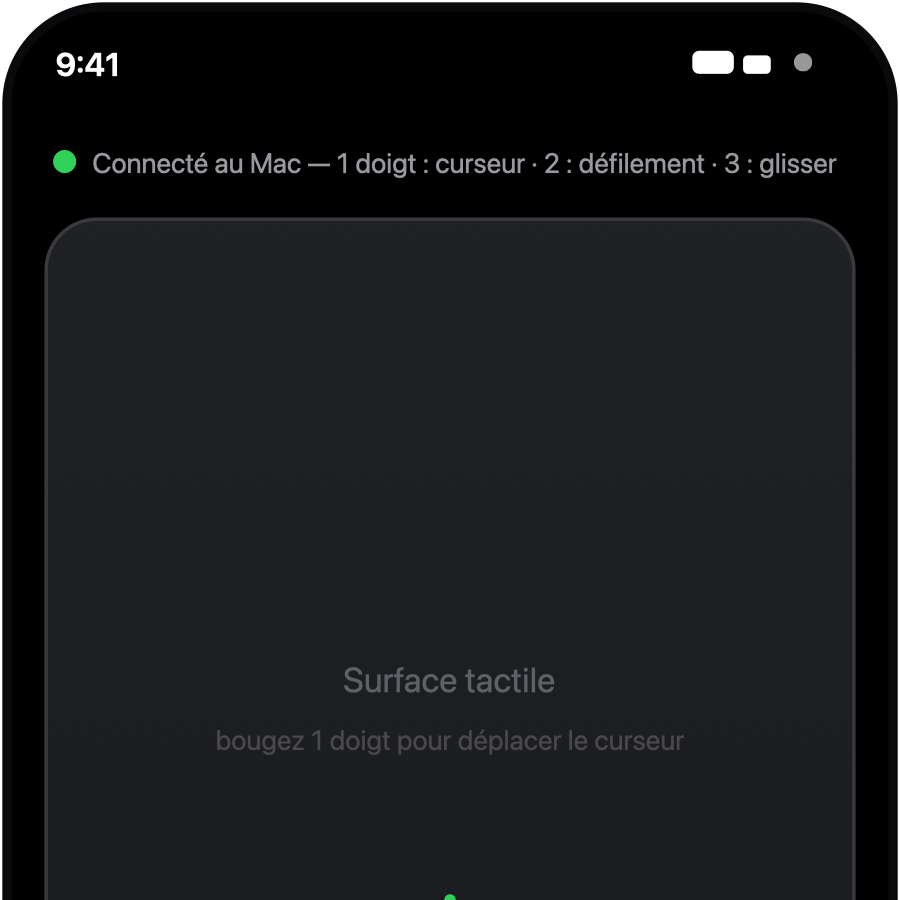
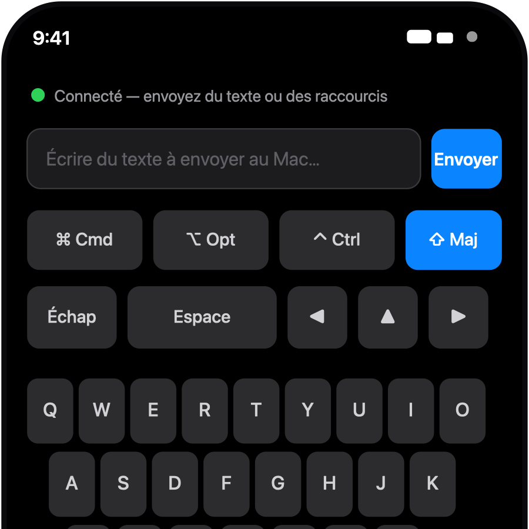
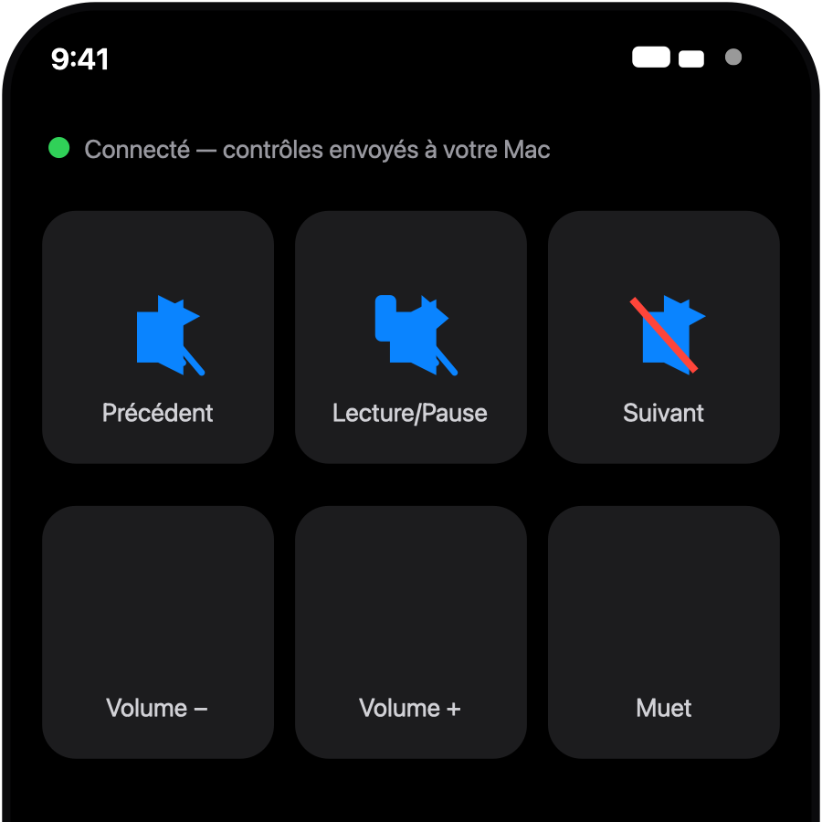
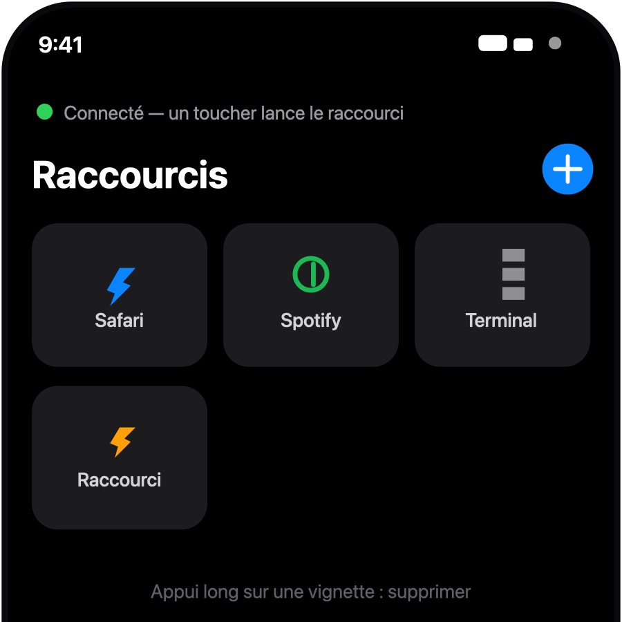
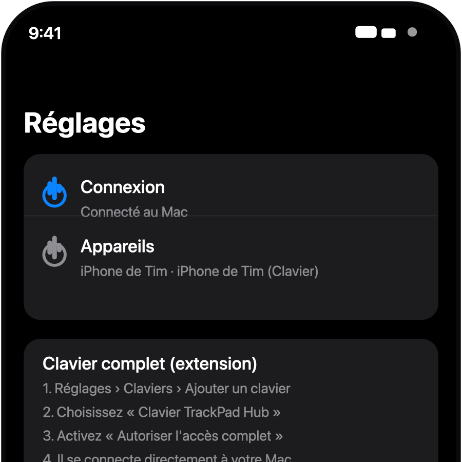
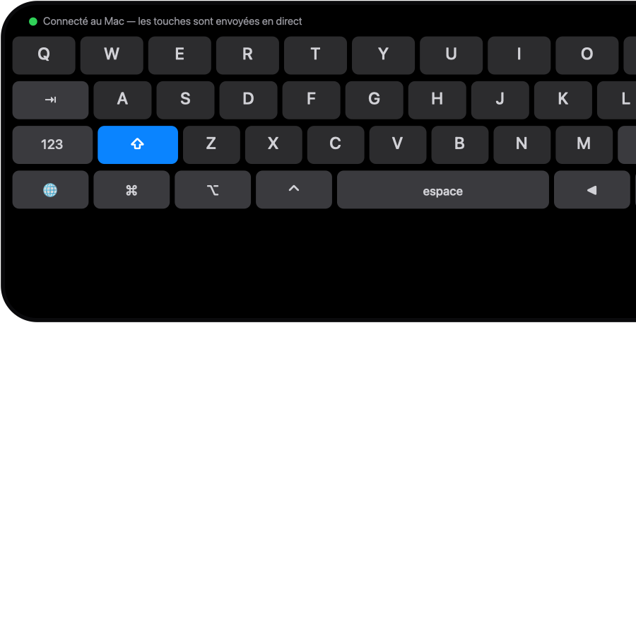
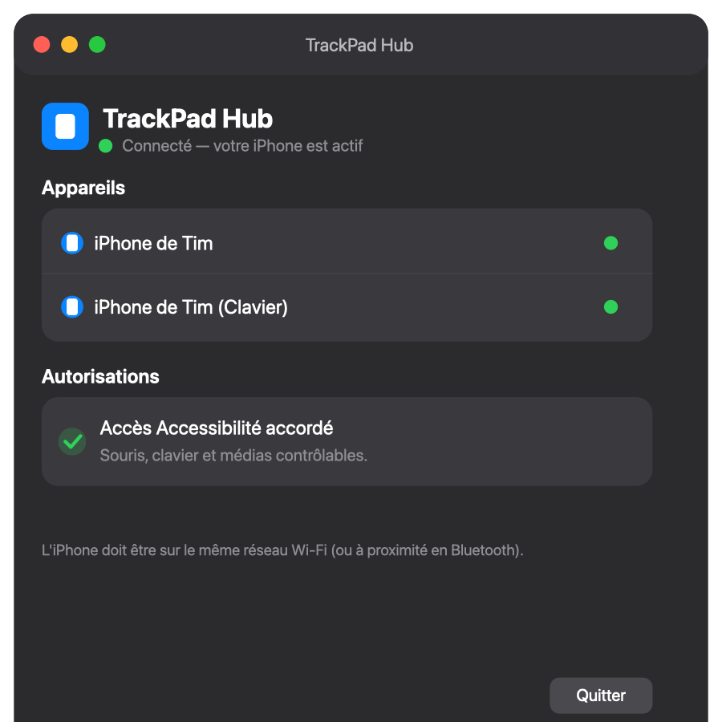

Trackpad
Surface multi-touch : 1 doigt = curseur, 2 = défilement, 3 = glisser. Appuis = clics. Vitesse réglable.
Onglet principal
Clavier
Texte + raccourcis ⌘/⌥/⌃/⇧ envoyés au Mac, touches spéciales et flèches.
Dans l'app
Média
Lecture/pause, piste suivante/précédente et volume du Mac.
MediaRemote + AppleScript
Raccourcis
Lancer une app, ouvrir un lien ou exécuter un raccourci d'un toucher.
Personnalisable
Réglages
Statut de connexion, guide de l'extension clavier et astuces trackpad.
Guide pas à pas
Extension de clavier (Full Access)
Clavier système avec couche chiffres/symboles, Maj, ⌘/⌥/⌃ et flèches. Fonctionne dans n'importe quelle app.
Processus séparé
App macOS (hôte)
Statut de connexion, appareils détectés et autorisation Accessibilité en un coup d'œil.
Reçoit et contrôle le Mac